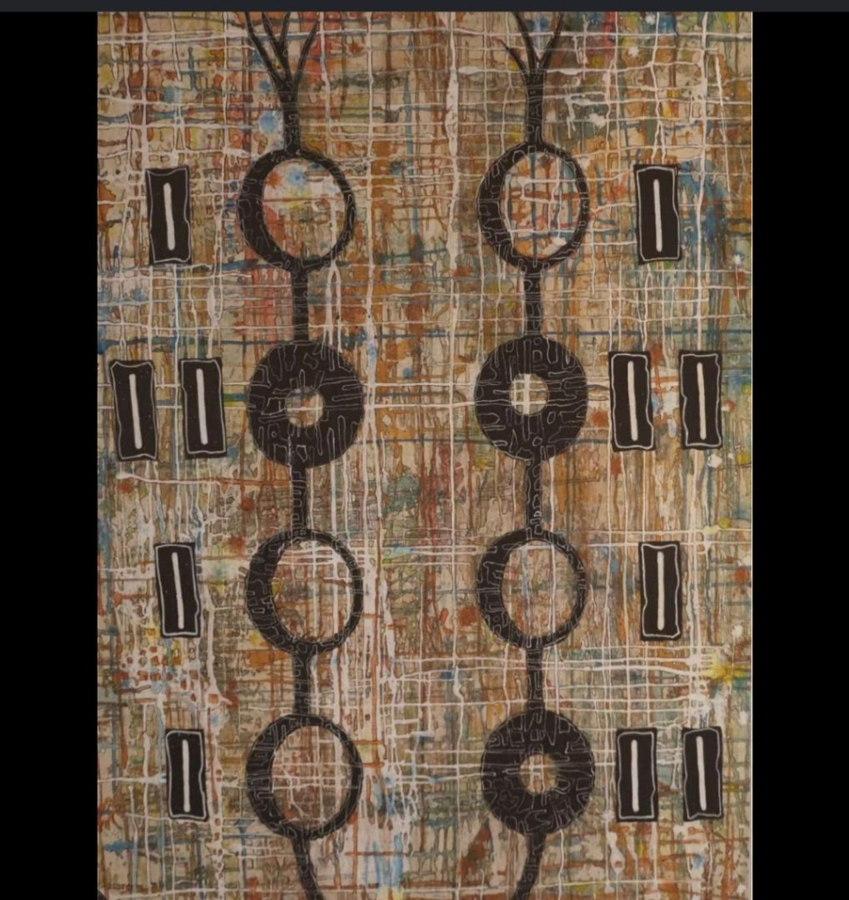
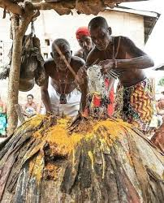
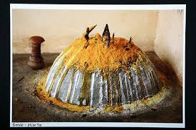
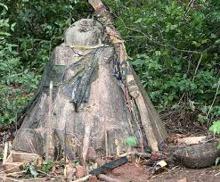
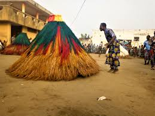
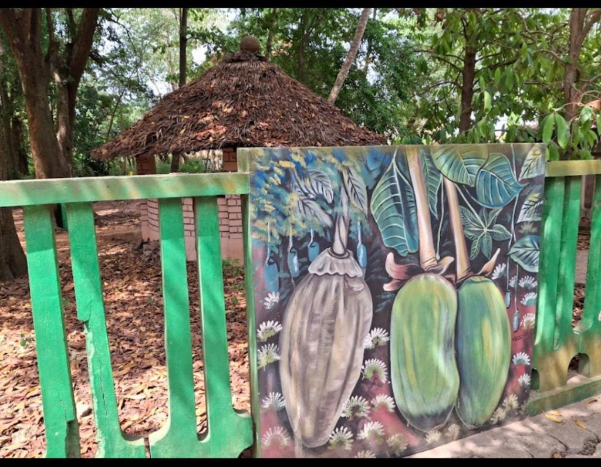
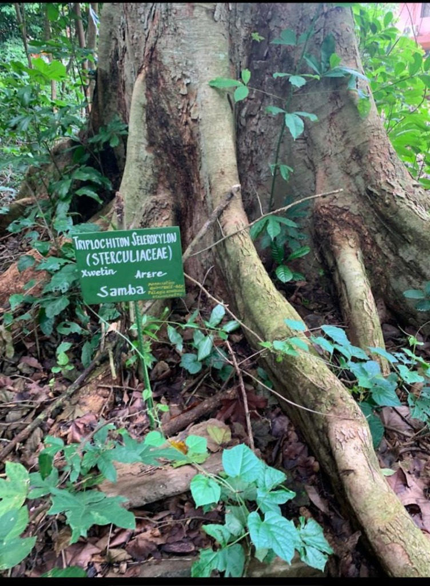
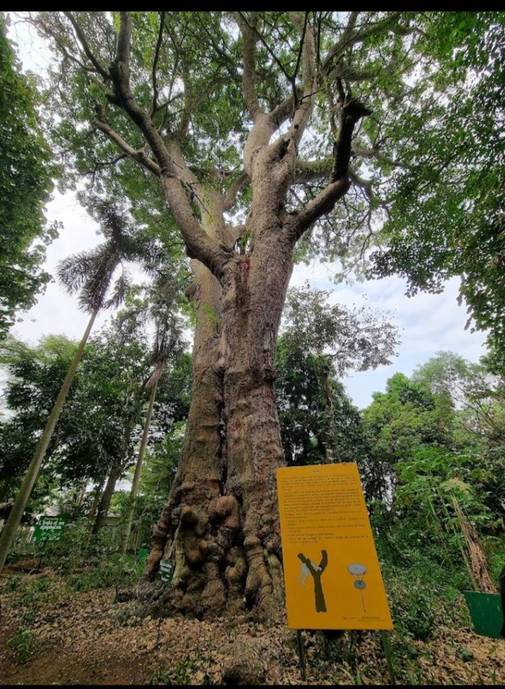
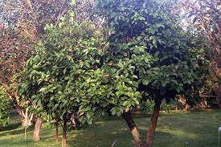

République du Bénin · Hogbonou
Fâ & Vodoun · Jardin des Plantes et de la Nature
Découvrir ↓Ville d'histoire, ville de culture — fondée au XVIIe siècle par le roi Dê-Gbêlin, Porto-Novo Ouando est le berceau d'une civilisation millénaire où coexistent royauté, sacré et nature.
Siège de l'Assemblée Nationale du Bénin, Porto-Novo Ouando est le centre politique et culturel du pays.
Le Fâ et le Vodoun, philosophies cosmiques inscrites au cœur de chaque geste quotidien.
La forêt du Migan (Miganzun), devenue Jardin des Plantes, sanctuaire de biodiversité tropicale.
Fondée par le roi Dê-Gbêlin, Porto-Novo Ouando est gardienne d'une tradition royale millénaire.
Hogbonou — « le lieu de la grande maison » — où chaque pierre, chaque arbre et chaque geste raconte une histoire qui appartient à toute l'humanité.
À Porto-Novo Ouando, le sacré n'est pas confiné aux temples — il vit dans les rues, les marchés, les forêts. Le Fâ et le Vodoun sont l'âme invisible de la ville.

Oracle de Sagesse et de Destinée
Système divinatoire d'origine yoruba-fon, le Fâ est une véritable science du destin. Ses 256 signes (Odù) guident la vie quotidienne et les grandes décisions de Porto-Novo Ouando.
Chaque naissance, mariage ou entreprise est guidé par le Fâ. L'oracle révèle le chemin juste.
Chaque signe correspond à des symboles, couleurs et formes précises visibles dans la peinture ci-dessus.
Inscrit au Patrimoine Immatériel de l'Humanité depuis 2008.

Force Cosmique et Présence Sacrée
Le Vodoun est une philosophie de vie, une religion cosmique qui unit les vivants, les morts et les forces de la nature. Porto-Novo Ouando abrite de nombreuses places sacrées Vodoun, temples à ciel ouvert.
Espaces sacrés ornés de symboles ésotériques, d'arbres sacrés et d'autels de prières.
Cérémonies sacrées, processions et initiations qui rythment la vie de Porto-Novo Ouando.
Le Vodoun a essaimé jusqu'en Haïti, au Brésil et en Louisiane à travers l'histoire.
Manifestations du sacré dans les espaces rituels de Porto-Novo Ouando

Sowo-Hunto — Offrandes et rites sacrés

Présence divine dans la forêt de Porto-Novo Ouando

Gardien de la nuit — danse sacrée traditionnelle
Espaces sacrés à ciel ouvert, lieux de prières, d'offrandes et de communion avec les esprits ancestraux.
Objets sacrés chargés d'énergie divine — chaque fétiche est une incarnation du Vodoun sur terre.
Danses des Zangbeto, processions des Vodounssi initiées, fêtes de l'igname et rituels de guérison.
Héritier de l'ancienne forêt sacrée Miganzun, le Jardin des Plantes de Porto-Novo Ouando est un sanctuaire de biodiversité tropicale au coeur de la ville.


Le Jardin des Plantes occupe l'emplacement de l'ancienne forêt sacrée du Migan (Miganzun). Le Migan était le Premier Ministre du royaume de Porto-Novo Ouando, gardien de la justice royale.
Sa forêt était un espace inviolable — refuge des esprits et lieu d'exécution des sentences royales. Transformé à l'époque coloniale, le JPN a conservé l'âme mystérieuse de Miganzun.
Centaines d'espèces tropicales répertoriées, certaines endémiques au Golfe de Guinée.
Papillons, oiseaux et reptiles endémiques trouvent refuge dans ce havre de paix urbain.
Pharmacopée traditionnelle encore utilisée par les guérisseurs et herboristes locaux.
Une fraîcheur naturelle et un calme remarquable en plein coeur de la ville animée.
Dans la cosmogonie de Porto-Novo Ouando, les arbres sont des êtres divins — témoins des pactes entre les hommes et les dieux, gardiens de la justice et de l'équilibre du monde.

L'Arbre des Rois et de la Justice
L'Iroko est l'arbre sacré par excellence en Afrique de l'Ouest. À Porto-Novo Ouando, il symbolise la puissance royale et l'autorité ancestrale.
Sous l'Iroko se tenaient les grands procès du royaume — sa présence garantissait l'impartialité du jugement.
Son bois imputrescible symbolise l'éternité des lignées royales et la permanence du pouvoir.
Les esprits ancestraux élisent domicile dans ses branches — l'Iroko est un pont entre les mondes.

Arbre de la Paix et de l'Alliance
La noix de cola est l'offrande première dans toutes les cérémonies de Porto-Novo Ouando. Offrir une noix de cola, c'est offrir la paix et sceller une alliance.
La cola scelle les pactes, les mariages et les réconciliations. Présente dans tous les rituels Fâ et Vodoun.
Première offrande lors de toute cérémonie — sans cola, aucun rite ne peut commencer.
Ses propriétés stimulantes sont utilisées dans la pharmacopée et la guérison traditionnelle.
Porto-Novo Ouando est bien plus qu'une capitale administrative — elle est le creuset où se forgent les identités, où le passé dialogue avec le présent et où la spiritualité infuse chaque geste du quotidien.
Le Fâ et le Vodoun tissent le lien invisible entre les hommes et le cosmos. Le Jardin des Plantes et de la Nature, héritier de la forêt sacrée Miganzun, offre un sanctuaire où les arbres sacrés continuent de témoigner du lien profond entre l'homme et la nature.
Ensemble, ces lieux font de Porto-Novo Ouando une ville unique, où chaque histoire appartient à toute l'humanité.